| 2026-10-28 | ill-unclear-task reels/ill-unclear-task | ready | animated-illustration-explainer Line-art scenes · Graphite & Sage | ~hard-truth | You don't procrastinate on hard tasks. You procrastinate on unclear ones. | | am_eric | 51 | | | | |
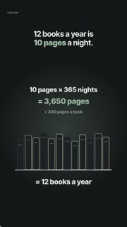 | 2026-10-28 | ill-ten-pages reels/ill-ten-pages | ready | animated-illustration-explainer Line-art scenes · Graphite & Sage | ~hard-truth | You don't need more free time to read twelve books a year. You need ten pages a night. | | am_eric | 49 | | | | |
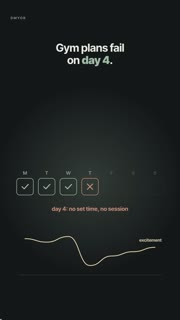 | 2026-10-28 | ill-gym-day-four reels/ill-gym-day-four | ready | animated-illustration-explainer Line-art scenes · Graphite & Sage | ~hard-truth | Your gym plan doesn't fail on day one. It fails around day four. | | am_eric | 56 | | | | |
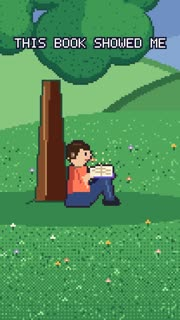 | 2026-10-27 | pixel-book reels/pixel-book | scheduled | pixel-story 16-bit pixel art story | ~story | Sam was reading under his favourite tree, when the pages started to glow. | | ElevenLabs Adam | 55 | | | | |
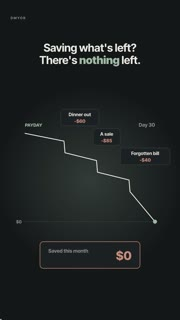 | 2026-10-27 | ill-save-first reels/ill-save-first | scheduled | animated-illustration-explainer Line-art scenes · Graphite & Sage | ~hard-truth | If you save whatever's left at the end of the month, you'll probably save nothing. | | am_eric | 52 | | | | |
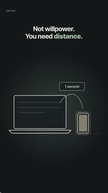 | 2026-10-27 | ill-phone-distance reels/ill-phone-distance | scheduled | animated-illustration-explainer Line-art scenes · Graphite & Sage | ~hard-truth | You don't need more willpower to stop checking your phone. You need distance. | | am_eric | 48 | | | | |
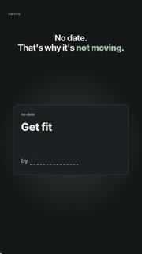 | 2026-10-27 | ill-goal-date reels/ill-goal-date | scheduled | animated-illustration-explainer Line-art scenes · Graphite & Sage | ~hard-truth | Your goal has no date. That's why it's not moving. | | am_eric | 42 | | | | |
| 2026-10-27 | ill-career-conversations reels/ill-career-conversations | scheduled | animated-illustration-explainer Line-art scenes · Graphite & Sage | ~question | Want to switch careers? Don't start with a six month course. Start with three conversations. | | am_eric | 51 | | | | |
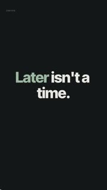 | 2026-10-26 | kt-later-trigger reels/kt-later-trigger | superseded | kinetic-typography Text on screen · punch cards | ~hard-truth | Later isn't a time. | | am_eric | 45 | | | | |
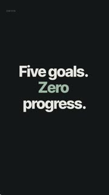 | 2026-10-26 | kt-five-goals reels/kt-five-goals | superseded | kinetic-typography Text on screen · punch cards | ~statement | Five goals at once usually means zero progress. | | am_eric | 57 | | | | |
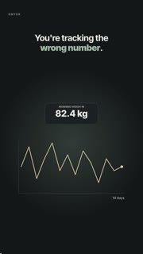 | 2026-10-26 | ill-track-inputs reels/ill-track-inputs | posted | animated-illustration-explainer Line-art scenes · Graphite & Sage | hard-truth | You're probably tracking the wrong number. | consistency | am_eric | 44.3 | 16.0 | 0.0 | | IN |
| 2026-10-26 | ill-night-before reels/ill-night-before | posted | animated-illustration-explainer Line-art scenes · Graphite & Sage | hard-truth | Your morning gets decided the night before. | planning | am_eric | 52.4 | 41.0 | 5.0 | 1.0 | IN |
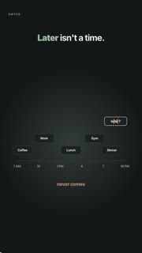 | 2026-10-26 | ill-later-trigger reels/ill-later-trigger | posted | animated-illustration-explainer Line-art scenes · Graphite & Sage | hard-truth | Later isn't a time. | habits | am_eric | 43.5 | 123.0 | 5.0 | | IN |
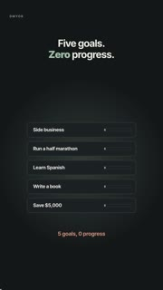 | 2026-10-26 | ill-five-goals reels/ill-five-goals | scheduled | animated-illustration-explainer Line-art scenes · Graphite & Sage | hard-truth | Five goals at once usually means zero progress. | focus | am_eric | 55.5 | | | | |
| 2026-10-26 | brand-one-place reels/brand-one-place | scheduled | cinematic-motion Designed cosmic canvas · cinematic | relatable | You have more dreams than you can hold. | brand | am_eric | 41.1 | | | | |
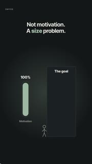 | 2026-10-25 | ill-size-problem reels/ill-size-problem | posted | animated-illustration-explainer Line-art scenes · Graphite & Sage | hard-truth | You don't have a motivation problem. You have a size problem. | goal-size | am_eric | 56.7 | 272.0 | 110.0 | | IN YO |
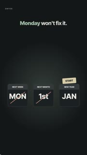 | 2026-10-25 | ill-monday-wont-fix-it reels/ill-monday-wont-fix-it | posted | animated-illustration-explainer Line-art scenes · Graphite & Sage | hard-truth | Monday won't fix it. | procrastination | am_eric | 43.3 | 118.0 | 0.0 | 1.0 | IN |
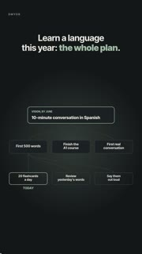 | 2026-10-25 | ill-language-plan reels/ill-language-plan | posted | animated-illustration-explainer Line-art scenes · Graphite & Sage | how-to-plan | Want to actually learn a language this year? Here's the whole plan, start to finish. | language-learning | am_eric | 51.1 | 46.0 | 19.0 | 1.0 | IN |
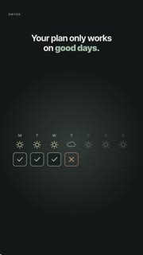 | 2026-10-25 | ill-bad-day-version reels/ill-bad-day-version | posted | animated-illustration-explainer Line-art scenes · Graphite & Sage | hard-truth | Your plan only works on good days. | consistency | am_eric | 51.4 | 128.0 | 42.0 | 1.0 | IN YO |
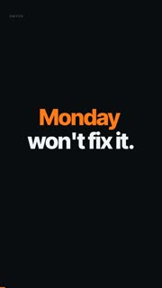 | 2026-10-24 | monday-wont-fix-it reels/monday-wont-fix-it | scheduled | kinetic-typography (legacy) | ~number-fact | monday-wont-fix-it (kinetic typography, narrated am_eric, 15.8s) | | none | 16 | | | | |
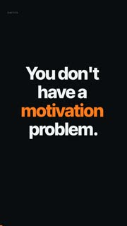 | 2026-10-24 | kt-size-problem reels/kt-size-problem | superseded | kinetic-typography Text on screen · punch cards | ~hard-truth | You don't have a motivation problem. | | am_eric | 29 | | | | |
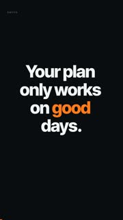 | 2026-10-24 | kt-bad-day-version reels/kt-bad-day-version | superseded | kinetic-typography Text on screen · punch cards | ~statement | Your plan only works on good days. | | am_eric | 31 | | | | |
| 2026-10-24 | hybrid-create-vision reels/hybrid-create-vision | superseded | hybrid-graphics-plus-demo Graphics + app demo | ~question | How a dream becomes a vision on Dmyor: | | none | 33 | | | | |
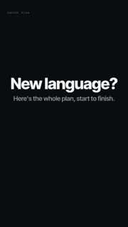 | 2026-10-24 | dg-language-plan reels/dg-language-plan | superseded | diagram-motion-graphics Diagram nodes · dark | ~statement | Learning a language this year? The whole plan: | | none | 39 | | | | |
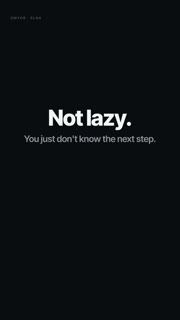 | 2026-10-23 | not-lazy-next-step reels/not-lazy-next-step | ready | kinetic-typography (legacy) | ~hard-truth | You're not lazy. You just don't know the next step. | | none | 27 | | | | |
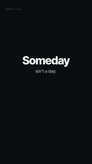 | 2026-10-23 | diagram-someday-vo reels/diagram-someday-vo | posted | diagram-motion-graphics Diagram nodes · dark | hard-truth | Someday isn't a day. It's not on your calendar. | procrastination | am_eric | 27.1 | 39.0 | | | IN |
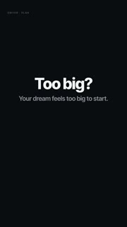 | 2026-10-23 | diagram-howto-vo reels/diagram-howto-vo | posted | diagram-motion-graphics Diagram nodes · dark | question | Too big to start? Shrink it. | planning | am_eric | 24.6 | 14.0 | | | IN |
| 2026-10-22 | tree-study-abroad reels/tree-study-abroad | posted | illustrated-scene Illustrated tree scenes | question | Study abroad feels too big? Break it down. | planning | none | 16.2 | 143.0 | | | IN |
| 2026-10-22 | tree-someday-vo reels/tree-someday-vo | ready | illustrated-scene Illustrated tree scenes | ~hard-truth | Someday isn't a day. It's not on your calendar. | | none | 27 | | | | |
| 2026-10-22 | tree-novel reels/tree-novel | posted | illustrated-scene Illustrated tree scenes | question | Still on page one? | planning | none | 16.2 | 15.0 | | | IN |
| 2026-10-22 | tree-howto-vo reels/tree-howto-vo | ready | illustrated-scene Illustrated tree scenes | ~statement | Too big to start? Shrink it. | | none | 22 | | | | |
| 2026-10-22 | tree-freelance reels/tree-freelance | posted | illustrated-scene Illustrated tree scenes | question | Big dream, no idea where to start? Plant it. | planning | none | 16.2 | 8.0 | | | IN |
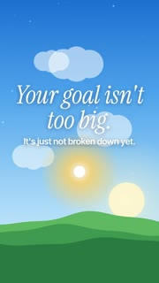 | 2026-10-22 | tree-first-5k reels/tree-first-5k | ready | illustrated-scene Illustrated tree scenes | ~hard-truth | Your goal isn't too big. It's just not broken down yet. | | none | 16 | | | | |
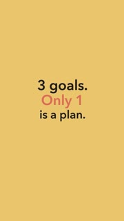 | 2026-10-21 | which-one-is-a-plan reels/which-one-is-a-plan | posted | kinetic-typography Text on screen · punch cards | quiz | 3 goals. Only 1 is a plan. Did you guess it before the countdown? | goal-setting | none | 15.2 | 8.0 | | | IN |
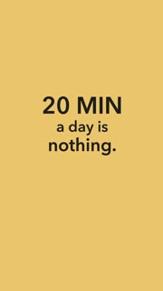 | 2026-10-21 | twenty-minutes-a-day reels/twenty-minutes-a-day | posted | kinetic-typography Text on screen · punch cards | number-fact | "I don't have time." | time | none | 14.6 | 19.0 | 15.0 | | IN |
 | 2026-10-21 | too-many-goals reels/too-many-goals | posted | kinetic-typography Text on screen · punch cards | number-contrast | 5 goals. 0 done. Sound familiar? | focus | none | 16.0 | 27.0 | | | IN |
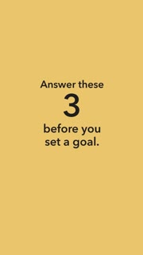 | 2026-10-21 | three-questions-before-a-goal reels/three-questions-before-a-goal | posted | kinetic-typography Text on screen · punch cards | framework-list | Answer these 3 before you set your next goal: | goal-setting | none | 17.6 | 8.0 | 8.0 | | IN |
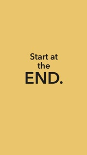 | 2026-10-21 | start-at-the-end reels/start-at-the-end | posted | kinetic-typography Text on screen · punch cards | framework-list | Big goal, no idea where to start? Start at the end. | planning | none | 14.6 | 5.0 | 0.0 | | IN |
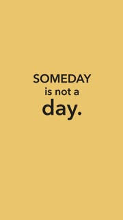 | 2026-10-21 | someday-is-not-a-day reels/someday-is-not-a-day | posted | kinetic-typography Text on screen · punch cards | hard-truth | Monday. Tuesday. Wednesday. Thursday. Friday. Saturday. Sunday. | procrastination | none | 12.8 | 74.0 | 0.0 | | IN |
 | 2026-10-21 | plan-the-bad-day reels/plan-the-bad-day | posted | kinetic-typography Text on screen · punch cards | hard-truth | Your plan only works on good days. So give it a bad-day version. | consistency | none | 14.2 | 34.0 | 0.0 | | IN |
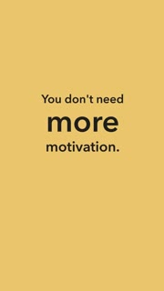 | 2026-10-21 | next-step-not-motivation reels/next-step-not-motivation | posted | kinetic-typography Text on screen · punch cards | hard-truth | You don't need more motivation. You need a step small enough to do today. | motivation | none | 16.4 | 22.0 | 8.0 | | IN |
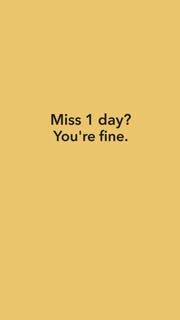 | 2026-10-21 | never-miss-twice reels/never-miss-twice | posted | kinetic-typography Text on screen · punch cards | reassurance-flip | Missed a day? That's not failure. That's a normal week. | habits | none | 16.0 | 30.0 | 0.0 | | IN |
| 2026-10-21 | life-in-weeks reels/life-in-weeks | posted | kinetic-typography Text on screen · punch cards | number-fact | A long life is about 4,000 weeks. | time | none | 15.2 | 16.0 | 1.0 | | IN |
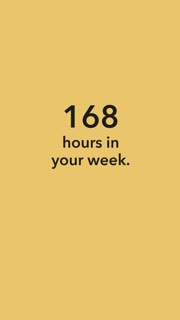 | 2026-10-21 | hours-in-a-week reels/hours-in-a-week | ready | kinetic-typography Text on screen · punch cards | ~question | 168 hours in your week. Where do they go? | | none | 16.4 | | | | |
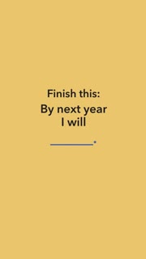 | 2026-10-21 | fill-the-blank reels/fill-the-blank | posted | kinetic-typography Text on screen · punch cards | fill-in-the-blank | Finish this: by next year I will ____. | goal-setting | none | 14.0 | 10.0 | 0.0 | | IN |
 | 2026-10-21 | about-to-start reels/about-to-start | posted | kinetic-typography Text on screen · punch cards | hard-truth | You've been "about to start" for months. | procrastination | none | 9.6 | 21.0 | 0.0 | | IN |
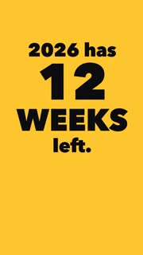 | 2026-10-08 | twelve-weeks-one-thing reels/twelve-weeks-one-thing | ready | kinetic-typography Text on screen · punch cards | ~hard-truth | twelve-weeks-one-thing (no VO, on-screen text only) | | none | 24 | | | | |
| | year-itemised reels/year-itemised | draft | kinetic-typography Text on screen · punch cards | ~number-fact | 2026, itemised | | none | 31 | | | | |
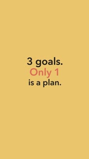 | | which-one-is-a-plan--bcd reels/which-one-is-a-plan--bcd | variant | kinetic-typography Text on screen · punch cards | ~question | 3 goals. Only 1 is a plan. Did you guess it before the countdown? | | none | 15 | | | | |
 | | twenty-minutes-a-day--bcd reels/twenty-minutes-a-day--bcd | variant | kinetic-typography Text on screen · punch cards | ~hard-truth | "I don't have time." | | none | 15 | | | | |
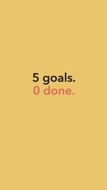 | | too-many-goals--bcd reels/too-many-goals--bcd | variant | kinetic-typography Text on screen · punch cards | ~question | 5 goals. 0 done. Sound familiar? | | none | 16 | | | | |
 | | three-questions-before-a-goal--bcd reels/three-questions-before-a-goal--bcd | variant | kinetic-typography Text on screen · punch cards | ~number-fact | Answer these 3 before you set your next goal: | | none | 18 | | | | |
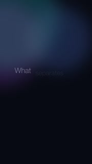 | | the-resistance reels/the-resistance | draft | kinetic-typography Text on screen · punch cards | ~statement | the resistance | | none | 70.0 | | | | |
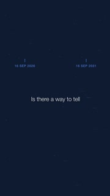 | | tell-your-future reels/tell-your-future | draft | kinetic-typography Text on screen · punch cards | ~statement | tell your future | | none | 54 | | | | |
 | | start-at-the-end--bcd reels/start-at-the-end--bcd | variant | kinetic-typography Text on screen · punch cards | ~hard-truth | Big goal, no idea where to start? Start at the end. | | none | 15 | | | | |
| | stair-to-space reels/stair-to-space | draft | kinetic-typography Text on screen · punch cards | ~statement | stair to space | | none | None | | | | |
| | someday-is-not-a-day--bcd reels/someday-is-not-a-day--bcd | variant | kinetic-typography Text on screen · punch cards | ~statement | Monday. Tuesday. Wednesday. Thursday. Friday. Saturday. Sunday. | | none | 13 | | | | |
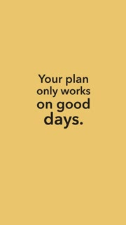 | | plan-the-bad-day--bcd reels/plan-the-bad-day--bcd | variant | kinetic-typography Text on screen · punch cards | ~statement | Your plan only works on good days. So give it a bad-day version. | | none | 14 | | | | |
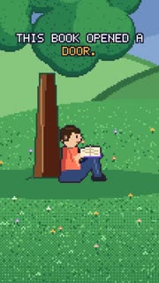 | | pixel-book-zara reels/pixel-book-zara | variant | pixel-story 16-bit pixel art story | ~story | Sam was reading under his favourite tree, when the pages started to glow. | | ElevenLabs Zara | 107 | | | | |
| | pixel-book-adam reels/pixel-book-adam | variant | pixel-story 16-bit pixel art story | ~story | Sam was reading under his favourite tree, when the pages started to glow. | | ElevenLabs Adam | 102 | | | | |
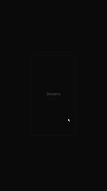 | | phase-one-launch reels/phase-one-launch | draft | kinetic-typography Text on screen · punch cards | ~statement | phase one launch | | none | 100.0 | | | | |
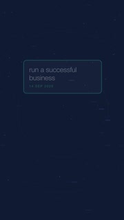 | | not-storage reels/not-storage | draft | kinetic-typography Text on screen · punch cards | ~statement | you remember the moment | | none | None | | | | |
 | | never-miss-twice--bcd reels/never-miss-twice--bcd | variant | kinetic-typography Text on screen · punch cards | ~hard-truth | Missed a day? That's not failure. That's a normal week. | | none | 16 | | | | |
| | moves-the-finish reels/moves-the-finish | draft | kinetic-typography (legacy) | ~statement | it moves the finish | | none | None | | | | |
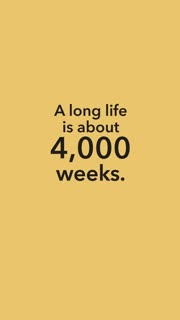 | | life-in-weeks--bcd reels/life-in-weeks--bcd | variant | kinetic-typography Text on screen · punch cards | ~number-fact | A long life is about 4,000 weeks. | | none | 15 | | | | |
| | letter-to-future reels/letter-to-future | draft | kinetic-typography Text on screen · punch cards | ~statement | letter to future | | none | 51 | | | | |
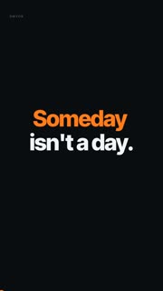 | | kt-someday-vo reels/kt-someday-vo | draft | kinetic-typography Text on screen · punch cards | ~hard-truth | Someday isn't a day. | | am_eric | 25 | | | | |
| | four-months-left reels/four-months-left | draft | kinetic-typography Text on screen · punch cards | ~statement | four months left | | none | 60.0 | | | | |
| | four-months-forward reels/four-months-forward | draft | kinetic-typography Text on screen · punch cards | ~statement | four months forward | | none | 60.0 | | | | |
 | | fill-the-blank--bcd reels/fill-the-blank--bcd | variant | kinetic-typography Text on screen · punch cards | ~statement | Finish this: by next year I will ____. | | none | 14 | | | | |
| | documented-odds reels/documented-odds | draft | kinetic-typography Text on screen · punch cards | ~statement | documented odds | | none | 75.0 | | | | |
| | days-gone reels/days-gone | draft | kinetic-typography Text on screen · punch cards | ~hard-truth | target: 43s, no narration | | none | None | | | | |
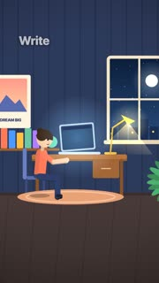 | | anim-dream-mountain reels/anim-dream-mountain | draft | prompt-animation Colourful 2D animated world | ~statement | Write the dream down. | | none | 18 | | | | |
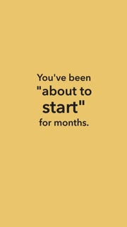 | | about-to-start--bcd reels/about-to-start--bcd | variant | kinetic-typography Text on screen · punch cards | ~statement | You've been "about to start" for months. | | none | 10 | | | | |